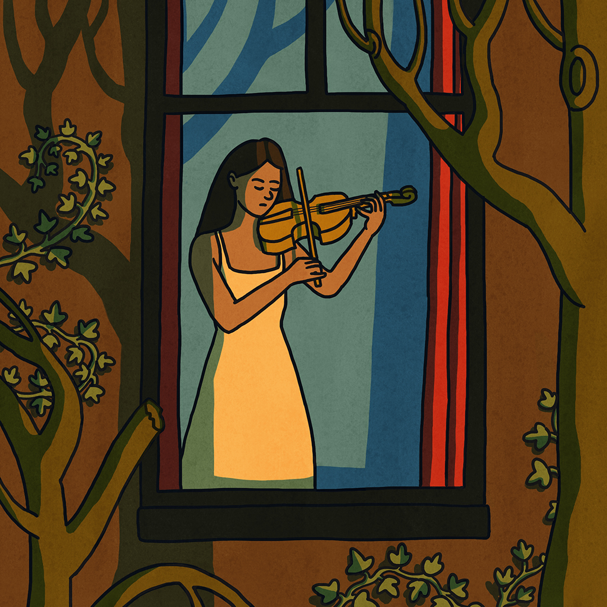

When you’re caught in depression, even your own home can feel like a cage.
But sometimes a small hobby, a simple act of creating or doing, can become a ray of light in that darkness.
I used the window as a symbol of both distance and possibility. It’s a reminder that even in the heaviest moments, there’s always a glimpse of the world beyond, and gentle ways to reach toward it.
Inspired by memories of the covid19 lockdowns.
I used the window as a symbol of both distance and possibility. It’s a reminder that even in the heaviest moments, there’s always a glimpse of the world beyond, and gentle ways to reach toward it.
Inspired by memories of the covid19 lockdowns.
Let’s work together!
Send me a creative brief along with your budget and project timeline.